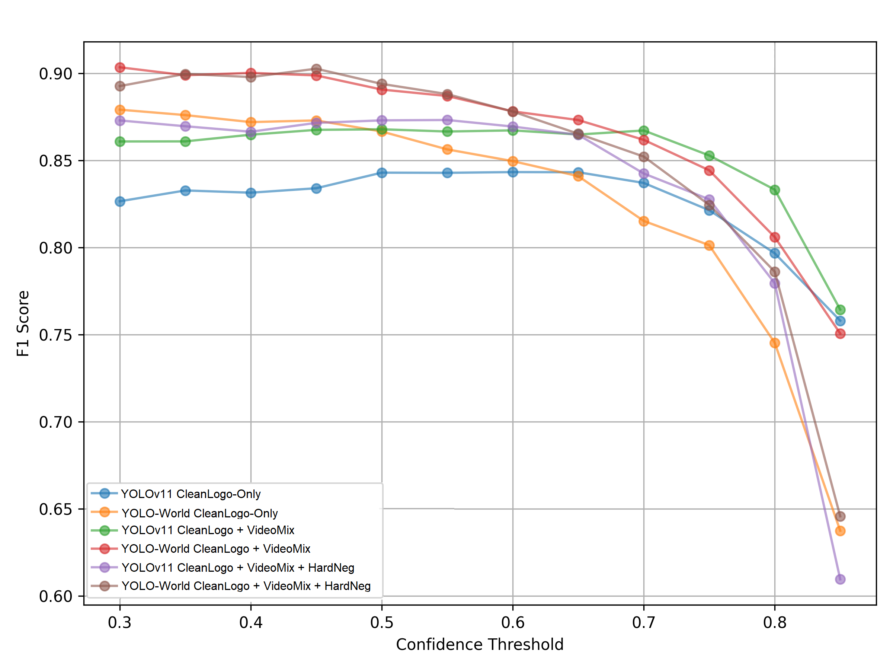
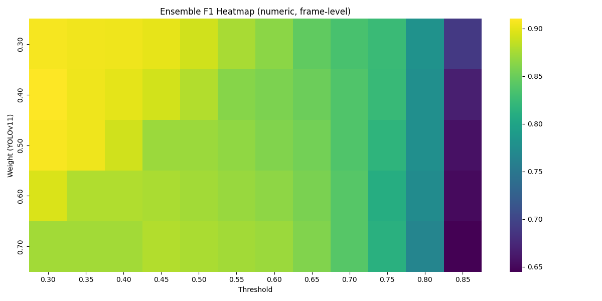
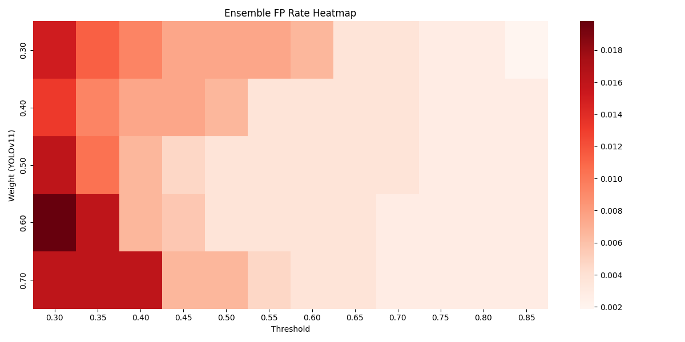
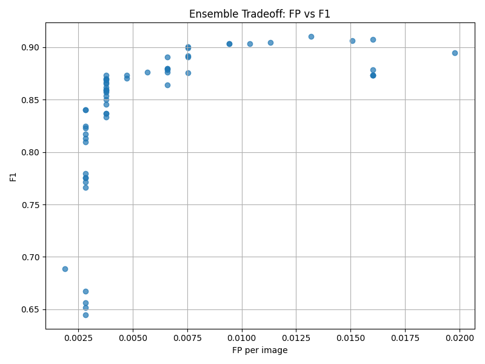

Featured Project · Master's Thesis · 2025 – 2026
Kids Online Brand Exposure
Detection Pipeline
A semi-automated computer vision pipeline that turns raw screen-recorded video
into structured brand exposure data — combining YOLO, OCR, and CLIP-based
zero-shot semantic validation at scale.

This project investigates the feasibility of a semi-automated pipeline for detecting
brand exposure in screen-recorded data. The framework integrates object detection,
optical character recognition, and semantic reasoning to support large-scale analysis
in scenarios where frame-level annotations are unavailable.
Rather than aiming for precise exposure measurement, the system is designed as a
scalable screening tool — reducing manual review effort and producing
outputs directly usable for downstream research analysis.
700K+
Video frames processed
4
Models in ensemble
2 yrs
Real-world data covered
E2E
Fully automated pipeline
This project was developed as my Master's thesis at the University of Otago to
support a large-scale study on how children are exposed to fast-food brand marketing
through everyday screen-recorded media.
The core challenge: convert high-volume, unstructured video into structured,
analysis-ready outputs — at a scale that made manual review completely impractical.
Brand exposure in children's digital media hides in many forms — logos, product
packaging, app interfaces, and background content. Manually reviewing hours of video
is not scalable when the research goal requires consistent, reproducible detection
across a large dataset spanning two years.
Pixel-based object detection alone also falls short. Logos appear at varying sizes,
angles, and quality levels. Without a validation layer, ambiguous detections inflate
false positives significantly.
-
Content-aware frame extraction
Sample representative frames from raw video to reduce redundancy while preserving full temporal coverage.
-
YOLO-based logo detection
Run YOLOv11 and YOLO-World models in parallel — both trained on brand logo data to detect visual matches across varied conditions.
-
OCR signal extraction
Apply EasyOCR to capture brand names embedded in on-screen text, UI elements, and packaging copy.
-
CLIP semantic validation
Use zero-shot image-text similarity to verify ambiguous detections — reducing false positives from visual noise.
-
Ensemble scoring and filtering
Combine YOLO confidence, OCR signal, and CLIP score into a single detection decision with configurable thresholds.
-
Exposure aggregation
Group frame-level detections into structured brand exposure events with duration and frequency metrics.
YOLOv11
YOLO-World
EasyOCR
CLIP
Python
OpenCV
Zero-shot learning
Ensemble scoring
Cloud processing
Evaluation: Threshold Tuning
A staged evaluation strategy was used to assess model behaviour across different
confidence thresholds and ensemble configurations before running the pipeline on
the full dataset.

Precision, recall, and F1 score across confidence thresholds.
Selecting a threshold involved a deliberate trade-off: higher confidence reduces
false positives but risks missing true exposures. The chart above guided the
calibration decision.
Multiple combinations of YOLO, OCR, and CLIP ensemble weights were tested to find
the configuration that best balanced detection accuracy against false positive rate.

F1 score across ensemble weight configurations.

False positive rate across the same configurations.

Trade-off chart used to select the final ensemble configuration.
Each model covers a different failure mode:
- YOLOv11 — high precision on known brand logos at pixel level.
- YOLO-World — a second fine-tuned detection model that complements YOLOv11 and improves coverage across different visual conditions.
- EasyOCR — catches brand names visible as on-screen text.
- CLIP — semantic validation to resolve ambiguous or conflicting signals.
No single model reliably handles all the visual variation in real-world screen recordings.
Combining them in an ensemble with configurable weighting makes the pipeline more
robust and tunable for different research precision requirements.
The pipeline processed over 700,000 video frames and produced structured brand
exposure outputs covering two years of real-world screen-recorded data.
It reduced the volume of footage requiring manual review and delivered results
in a format directly usable for downstream research analysis and reporting —
fulfilling its design goal as a scalable screening tool.
Several limitations are acknowledged — primarily reflecting deliberate design
trade-offs made to prioritise system-level feasibility and scalability.
-
Limited optimisation of auxiliary modules — OCR and CLIP were
incorporated as supporting modules and were not extensively tuned. The primary
focus was developing a stable YOLO-based ensemble framework.
-
Constrained effectiveness of CLIP under zero-shot settings — CLIP's
contribution under full-frame, zero-shot configuration was limited. In some cases
it overlapped with YOLO-World outputs or introduced additional false positives,
suggesting that region-level reasoning would be more effective.
-
Simplified false positive handling — false positives were mainly
controlled through ensemble filtering and confidence thresholds. More advanced
suppression strategies were not implemented.
-
No temporal modelling — the pipeline operates at the frame level
and does not model temporal continuity. Exposure events are treated as independent
observations rather than coherent temporal segments.
These limitations do not undermine the feasibility of the proposed pipeline but
define clear boundaries for its current scope.
Several directions may further strengthen the pipeline:
-
Optimisation of OCR and CLIP components — image-level preprocessing
(resolution adjustment, sharpness enhancement) and more systematic prompt engineering
could better exploit CLIP's semantic reasoning capabilities.
-
Advanced false positive suppression — confidence reweighting or
improved negative sample handling could further improve robustness under highly
imbalanced conditions.
-
Temporal modelling — temporal smoothing or sequence-based aggregation
could better capture exposure duration and persistence, improving interpretability
in video-based detection tasks.
-
Alternative detection architectures — comparing the YOLO-based
framework with grounding-based models (e.g., Grounding DINO) and evaluating
model compression techniques for large-scale deployment feasibility.
This project contributes a reproducible and scalable framework for brand exposure
analysis in real-world screen-recorded media. Rather than pursuing maximal detection
accuracy under controlled conditions, it prioritises robustness and applicability —
demonstrating that a pipeline can support large-scale exposure screening even without
frame-level ground truth annotations.
By integrating detection-based and semantic approaches in a conservative, interpretable
way, the work supports the broader goal of data-driven analysis of children's media
exposure at scale — and provides a foundation for future research in this space.